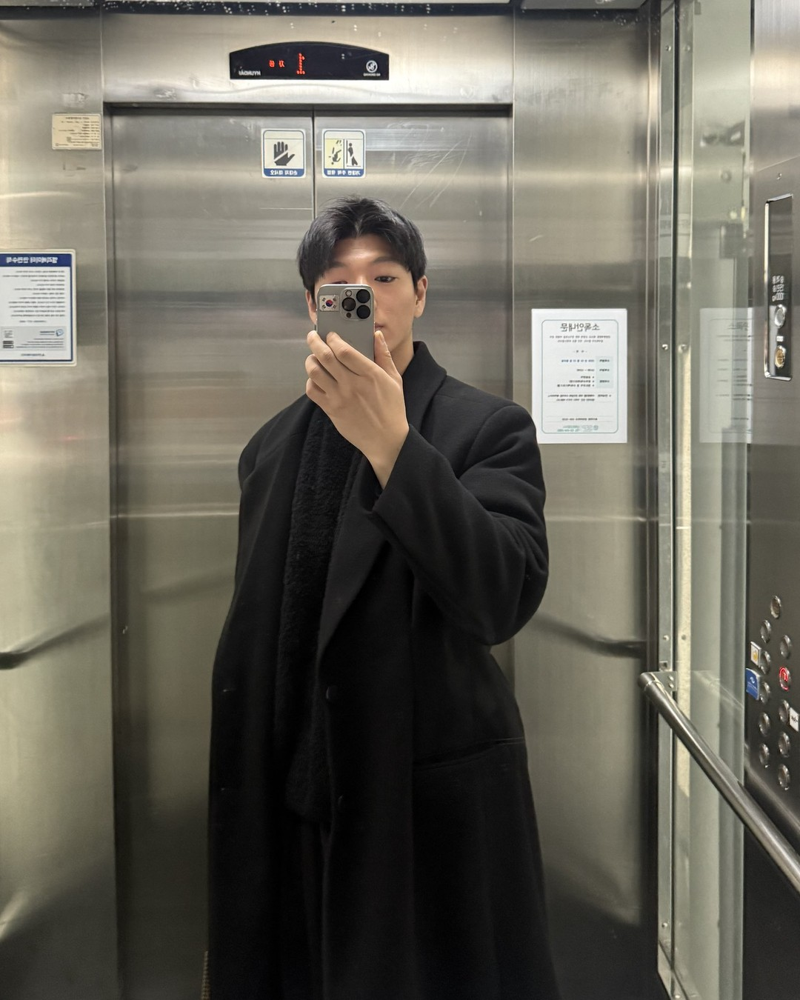
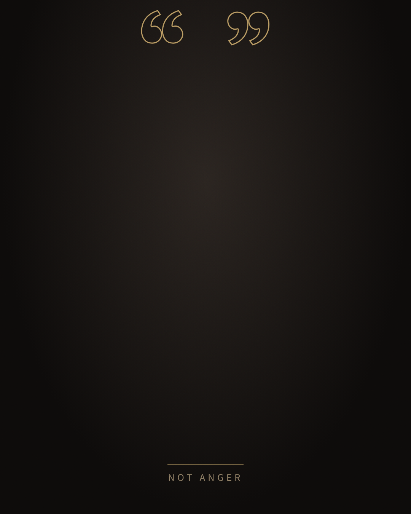
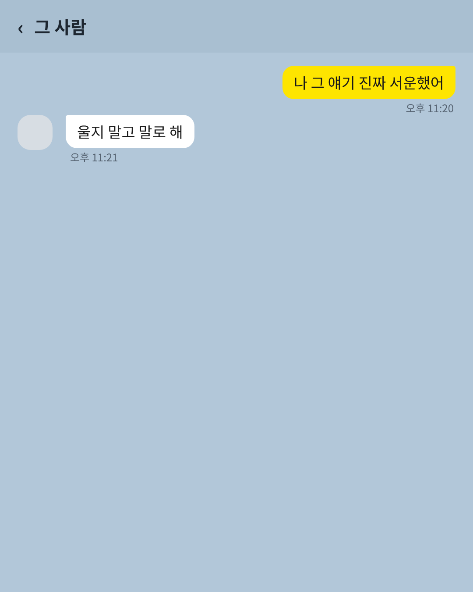
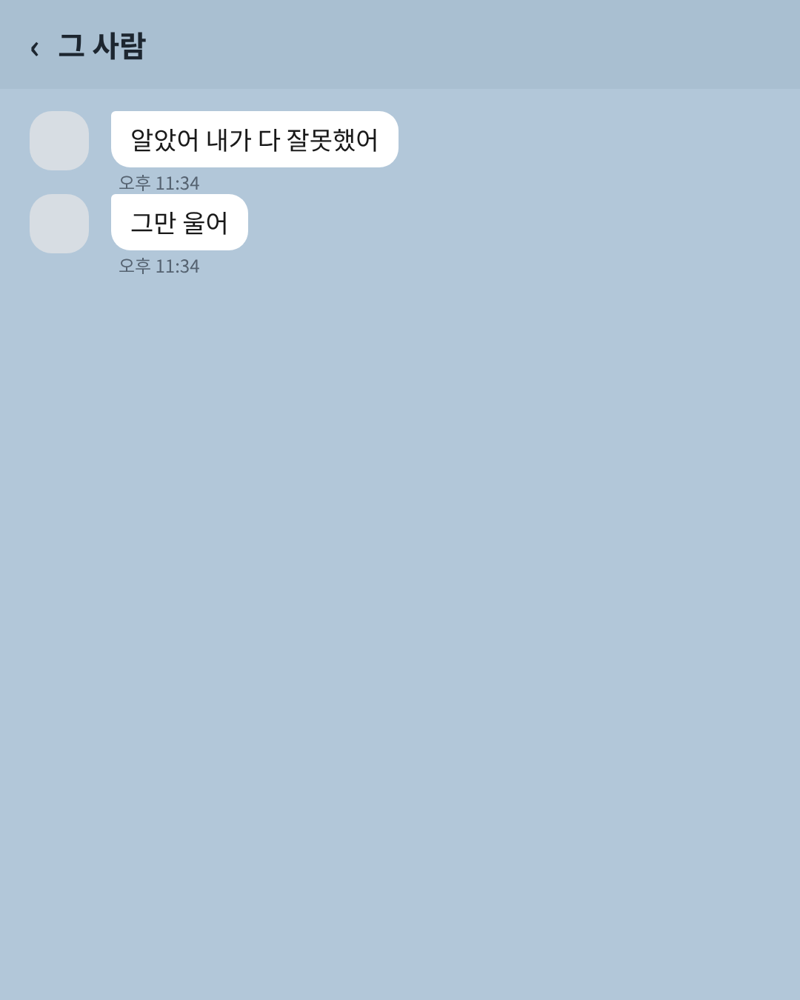
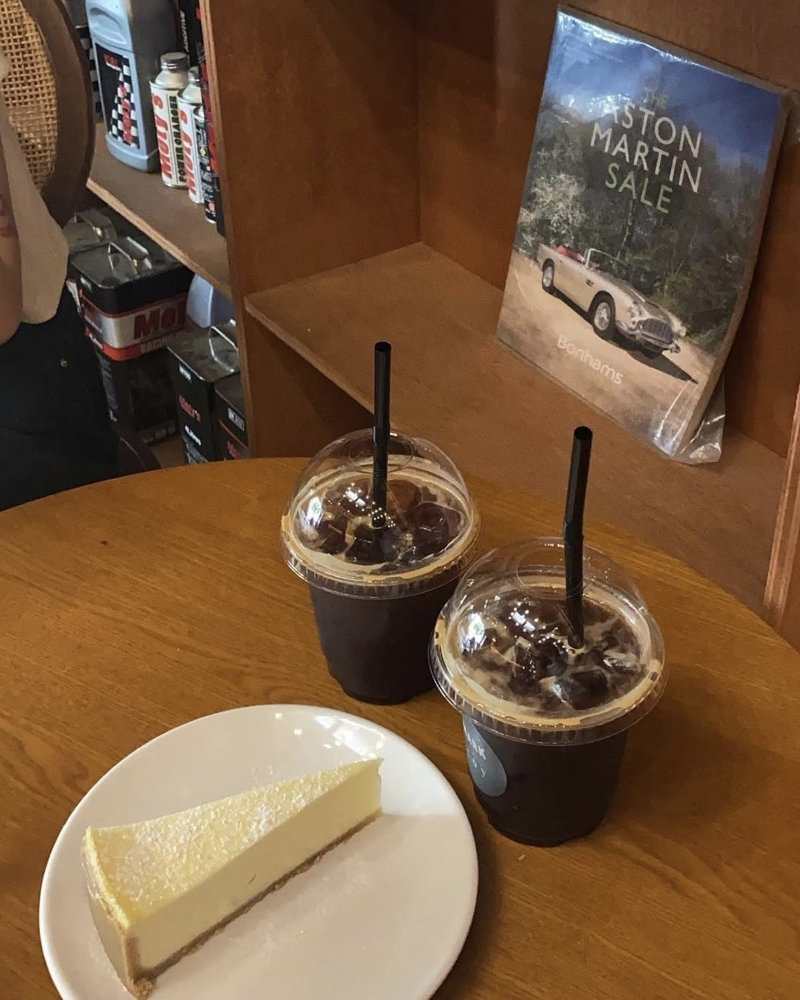
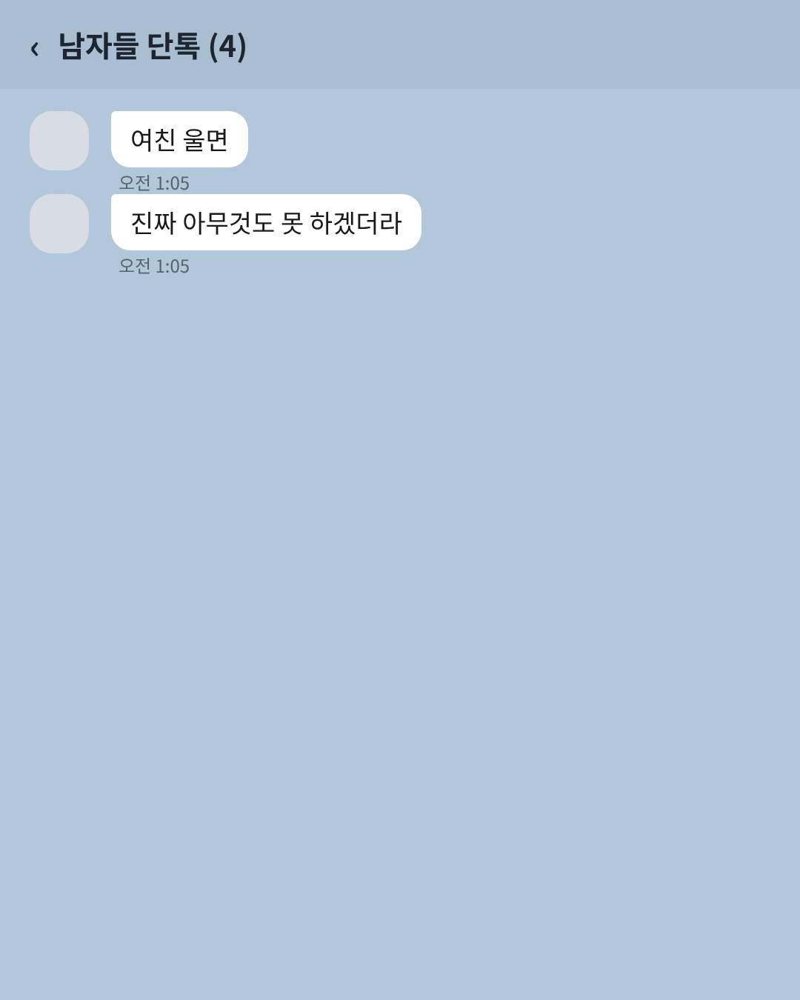
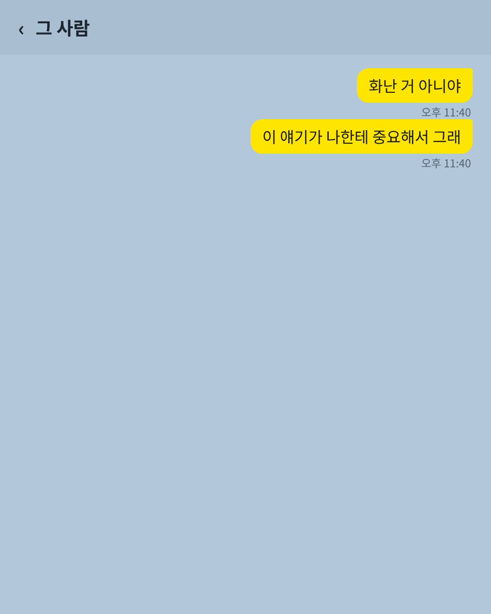
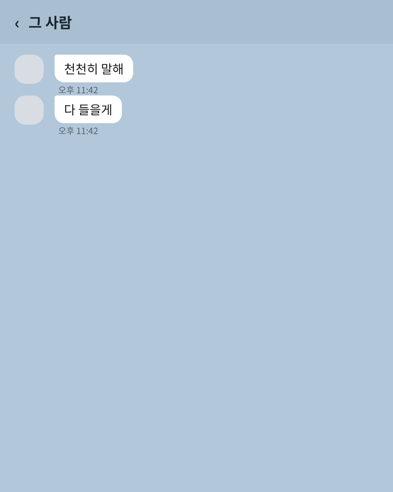
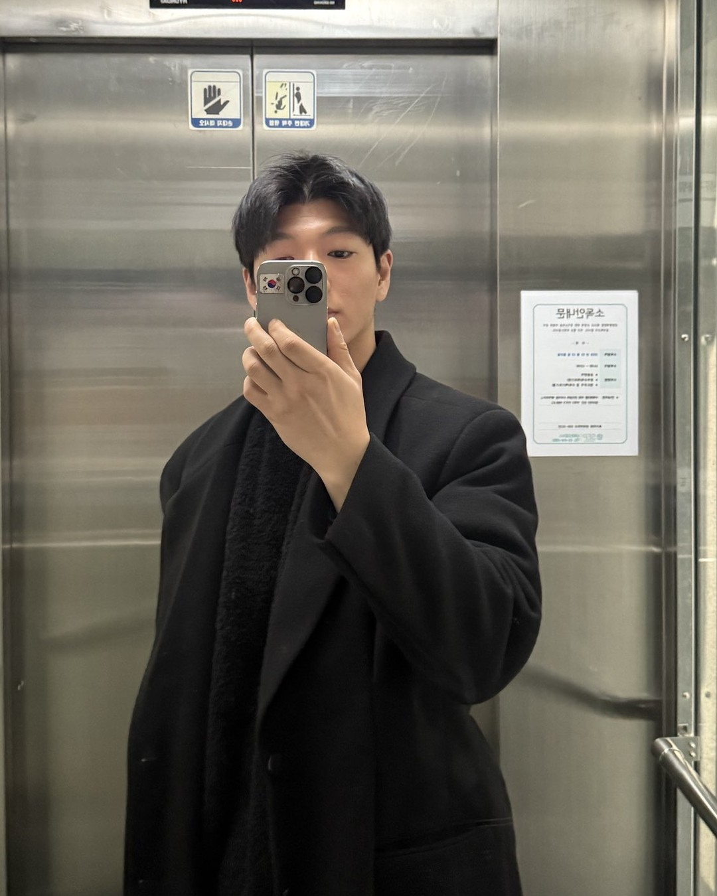

여자가 울 때,
남자가 하면 안 되는 말 4
(그거, 화나서 우는 거 아니에요.)
1/14
@mszexc
넘겨보세요 →

여자가 우는 건
너무 중요한 얘기라서 감정이 넘친 거예요.
(아무렇지 않은 사람 앞에선 울지도 않아요.)
2/14
@mszexc
남자들끼리 하는 말 #81

첫 번째.
"또 울어?"
(그녀에겐 "네 마음은 귀찮아"로 들려요.)
3/14
@mszexc
남자들끼리 하는 말 #81

두 번째.
"울지 말고 말로 해."
(지금 말하는 중이에요. 울면서도요.)
4/14
@mszexc
남자들끼리 하는 말 #81
세 번째.
"우는 거 반칙이야."
(이기려고 우는 게 아니라, 참다가 넘친 거예요.)
5/14
@mszexc
남자들끼리 하는 말 #81

네 번째.
"알았어, 내가 다 잘못했어."
(울음을 멈추려는 사과는, 사과가 아니에요.)
6/14
@mszexc
남자들끼리 하는 말 #81

남자들끼리는 이렇게 말해요.
"여친 울면 진짜 아무것도 못 하겠더라."
(귀찮은 게 아니라, 얼어붙은 거예요.)
7/14
@mszexc
남자들끼리 하는 말 #81

남자는 우는 걸 보면
고쳐줘야 하는데 방법을 몰라서 얼어요.
(그래서 나오는 말이 저 네 마디예요.)
8/14
@mszexc
남자들끼리 하는 말 #81

다만 구별할 건 하나예요.
울면서도 말을 이어가는지.
(울음으로 대화를 끝내는 거랑은 달라요.)
9/14
@mszexc
남자들끼리 하는 말 #81

울고 나서, 그녀는 이 한마디.
"화난 거 아니야. 이 얘기가 나한테 중요해서 그래."
(숨 한 번 쉬고요.)
10/14
@mszexc
남자들끼리 하는 말 #81
그는 "그만 울어" 대신 이 한마디.
"천천히 말해. 다 들을게."
(고쳐주지 않아도 돼요. 들어주면 돼요.)
11/14
@mszexc
남자들끼리 하는 말 #81

이 두 문장이면
울음이 싸움이 아니라 대화가 돼요.
(그날 싸움이 거기서 끝나요.)
12/14
@mszexc
남자들끼리 하는 말 #81
울지 않아도 되는데
이 사람이 너무 중요해서 우는 거예요.
13/14
@mszexc
남자들끼리 하는 말 #81

이것만 기억하세요.
우는 그녀에겐 해결보다 "다 들을게"가 먼저예요.
남자가 하는 말의 뜻은 전자책 1·2권에 · 프로필 링크에서 무료로 받아보세요
14/14
@mszexc
남자들끼리 하는 말 #81